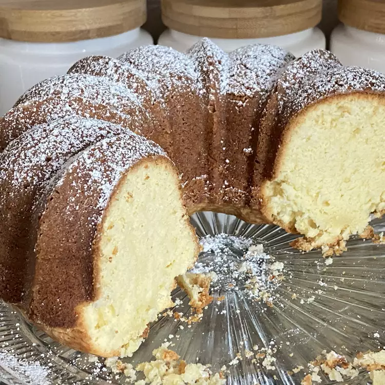

Pound Cake
Home

Description
This traditional pound cake recipe is over 100 years old and is the original kind of pound cake: it contains
1 pound each of butter, sugar, eggs, and flour with no salt, baking powder, or flavoring. Vanilla or almond
extract can be added if desired.
Preperation
| Prep Time |
Cook Time |
| 20 mins |
1 hr 10 mins |
|
Total Time: |
Servings: |
| 1 hr 40 mins |
30 |
|
| Yield: |
| 1 9x13-inch casserole |
Ingredients
- 3 cups white sugar
- 2 cups butter, softened
- 6 large eggs
- 4 cups all-purpose flour
- ⅔ cup milk
Directions
- Preheat the oven to 350 degrees F (175 degrees C). Grease three 8x4-inch loaf pans, then line with
parchment
paper.
- Cream together sugar and butter in a large bowl with an electric mixer on medium speed until light and
fluffy.
Beat
in eggs, one at a time, mixing well after each addition. Beat in flour alternately with milk, mixing
just until
incorporated. Pour batter evenly into the prepared loaf pans.
- Bake in the preheated oven until a toothpick inserted into the center of the cakes comes out clean,
about 70
minutes.
- Run a small knife around the edges of each pan. Allow cakes to cool in the pans for 10 minutes, then
invert,
peel
off the parchment, and cool completely on wire racks.
Nutrition Facts
(per serving)
|
264 |
14g |
33g |
3g |
Calories |
Fat |
Carbs |
Protein |